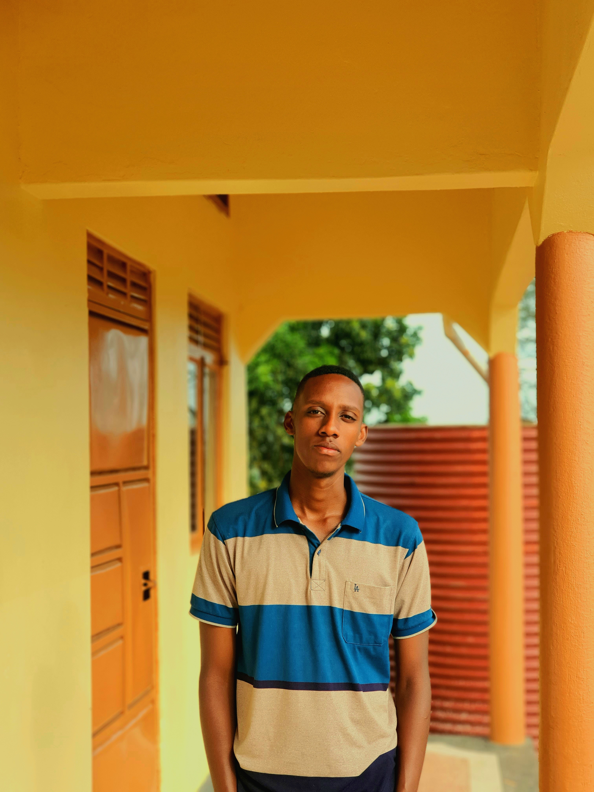

Passionate about technology and growth
I am AKANDWANAHO SIMON KATOZI, a software engineering student with a strong interest in innovation, coding, and digital problem-solving. I value discipline, creativity, and continuous learning, and I am committed to building a future in technology.
My journey in software engineering is driven by the desire to develop solutions that are practical, accessible, and useful to people. I enjoy learning new tools, exploring how systems work, and creating experiences that are both functional and visually appealing.

Education and focus
I am building a solid foundation in software engineering, problem solving, and practical development.
Software Engineering Student
Focused on learning core computing concepts, software development, and web technologies.
Front-end & UI Development
Developing responsive web pages, user interface design, and structured project logic.
Career goal
To work on meaningful technology projects and grow into a skilled software engineer who contributes value and innovation.
My strengths
These are the qualities I bring into my learning and project work.
Motivated learner
I enjoy learning new technologies and improving my technical understanding every day.
Focused and disciplined
I stay goal-oriented and committed to delivering quality work through effort and consistency.
Team-minded
I value collaboration and believe in communicating clearly while working with others.